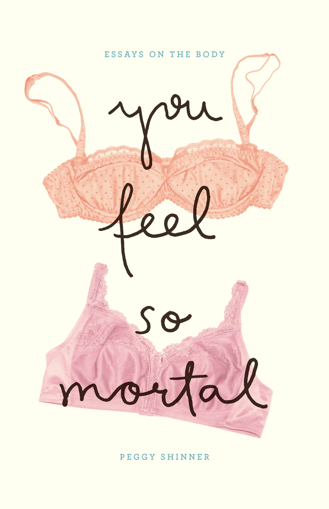

Books
Shamewreck
In Shamewreck, Peggy Shinner interrogates the entanglement of shame and language, casting shame as a moral force, a conscience-beast, an umpire, the fellow who awaits when you come home.
These essays grapple with the nuclear bombing of Bikini Atoll and the emergence, four days later, of the bikini in Paris; the link between property and personhood and what it means to die without possessions; the mutability of language and how shamefaced once meant modest and bashful, before morphing into its opposite, abashed and ashamed; how talkative women were thought to be sloppy women, like Eve loose of mouth and morals; how occupation once meant heterosexual intercourse and now means military invasion.
Parsing dark undercurrents of popular culture alongside her own experiences as a queer woman, Shinner exhorts us to abandon willful unseeing and consider the legacies of language. Take a look, she urges, you can buy a new car in twenty-first century America and for your money get two masters and a slave key. Shamewreck complicates our notions of shame and shamelessness and rescues them from the refuse pile, reclaiming shame as a potent moral adjudicator.
Praise for Shamewreck
“When Peggy Shinner asks, ‘Can we not have words?’ she has no intention of giving up on language. Bikini. Occupy. Lesbianism. Apology. Words and their archives are the girders of this collection — essays as gorgeous idiom excavations, language as keys to systems that forbid and sometimes liberate. Shinner’s stunning etymologies accrete into stories and analyses that revise the unseen and rebuild from the variants, in the process transforming the wreck of shame into a navigable morality that might just keep us afloat.”
- –— Barrie Jean Borich, author of Apocalypse, Darling
“A literary acrobat, Peggy Shinner juggles memoir and social criticism, tossing seemingly unrelated ideas in the air like flaming torches. The thrill comes in watching them spin. Obsessed with hidden meanings of words, Shinner is also a keen observer of silences, especially her own unspoken apologies to a long-dead mother. At turns mournful, meditative, angry, and electrifying, Shamewreck is a wonder of a book.”
- –— Miles Harvey, author of The Registry of Forgotten Objects

You Feel So Mortal
Feet, bras, autopsies, hair. You Feel So Mortal is a collection of essays about the body. It looks at the author’s own body, female and Jewish; her parents, the bodies she came from; the collective body, with all the social and political forces it brings to bear. “Family Feet” examines feet through the often-skewed lens of history, and discovers that the author’s flat-footed specimens are, according to some, decidedly and disturbingly Jewish. “The Fitting(s)” considers bras, breasts, and the storied bra fitter. “Postmortem,” an essay about autopsies, asks, from a grieving daughter’s point of view, what it means to cut the body open. “Berenice’s Hair,” a time-trip through myth, culture, and history, looks at women’s hair in ancient Rome, France, Laos, Syria, Cuba, India, and the author’s own past as well.
Over the course of twelve essays, Shinner holds a mirror up to the complex desires, fears, confusions, and mysteries that shape our bodily perceptions. Some of the pieces examine the disposition of the body under emotional or physical duress; others look at it as transgressive, and transgressed. There are 206 bones in the human body, 29 in the skull alone. Ten major organ systems. Toss in the soul, which Descartes said resided in the brain while some of his fellow Frenchmen opted for the liver. What does the whole mess mean?
Praise for You Feel So Mortal
“Peggy Shinner writes with self-critical candor and an often rueful wit to combine the intimate with the historical, the deeply private with the Google-able in an engaging, endearing, and wholly unexpected way. This is not a memoir, but we get to know her very well; we emerge feeling we’ve watched a woman grow up and learn some important things about the reach and the limits of her needs and her daring. And, as in the best writing, we thereby discover a great deal that pertains to us.”
- –— Rosellen Brown, author of Half a Heart
“Shinner is a witty and insightful storyteller and brilliant thinker, attentive to the ways the body shapes up in your mind and the world. You Feel So Mortal makes you feel so alive.”
- –— Aleksandar Hemon, author of The Lazarus Project
“Like the transparent pages of fine anatomy books that peel apart the strata of the body, the nested essays in Shinner’s You Feel So Mortal get under our skins. She excavates, in spades, the indicative and intricate nature of our layered and larded corporeal selves. Lyrically adept, she effortlessly reanimates Schwartz’s heavy bear, making the big beast of the body dance the horah, turning the ‘withness’ of our heft into a helium meringue, a gauzy heartache, a lost lost.”
- –— Michael Martone, author of Four For a Quarter
“You Feel So Mortal is a book I found nearly impossible to put down, and when I was forced to do so, I couldn’t stop thinking about it. Shinner’s warm and funny voice, along with her immense, enquiring, humane intelligence make the essays in this book — which concern identity, mortality, romantic and filial love, gender — a surpassing intellectual gem that entertains and engages readers with every single word. I adored this book.”
- –— Christine Sneed, author of Little Known Facts and Portraits of a Few of the People I’ve Made Cry
“smart, witty, bittersweet”
- –— Chicago Tribune / Printers Row Journal
“These essays, even when the topics are ugly, shimmer with Shinner’s intelligence, honesty, and humor.”
- –— The Boston Globe
“the best kind of personal essay: one that flows outwards from the suffused intimate into the pervaded universal.”
- –— The Australian
“Shinner applies her scalpel”
- –— Review 31
“Shinner’s twelve remarkable essays are anything but the usual fare, instead taking as her subject the complicated relationship between our bodies and our souls.”
- –— Colorado Review
“story-telling that is starkly funny and tender”
- –— River Teeth